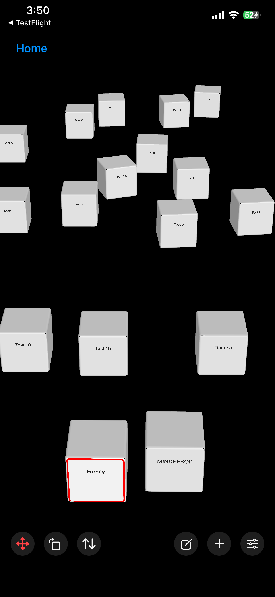
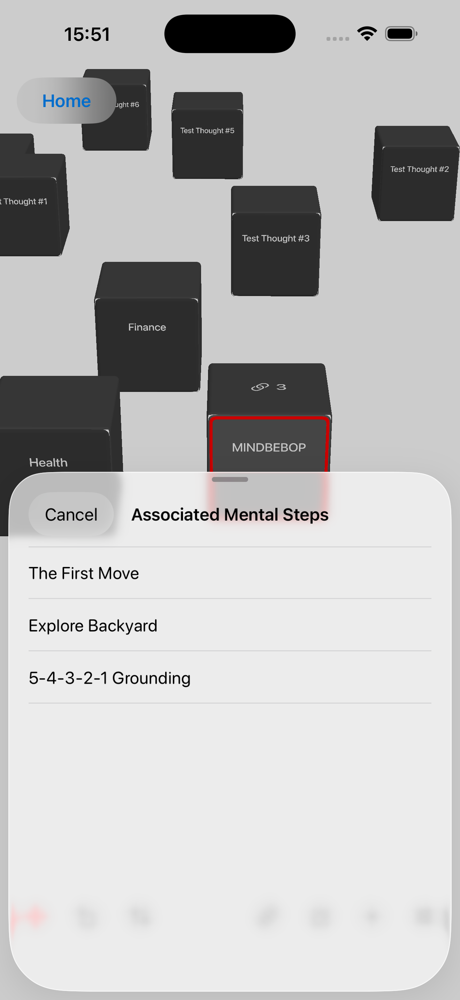

Ein Raum, in dem Gedanken ihren Platz haben können, mögliche Wege offenbleiben und du selbst entscheidest, wann – oder ob überhaupt – du von einem Gedanken aus irgendwohin weitergehen möchtest.
Während du etwas anderes tust, können Gedanken durch den Mental Background treiben.
Manche ziehen einfach vorüber.
Manche kehren immer wieder zurück.
Manchmal reicht es aus, die Beziehung zu einem Gedanken zu verändern.
Du kannst ihn aus einem anderen Blickwinkel betrachten.
Ihn beiseitelegen.
Ihm weniger Aufmerksamkeit schenken.
Eine Grenze setzen.
Oder deiner Aufmerksamkeit ermöglichen, sich woandershin zu bewegen.
Vielleicht kommt der Gedanke dadurch zur Ruhe.
Manchmal bleibt er jedoch bestehen.
Der Gedankenraum gibt einem Gedanken einen Ort, an dem er existieren kann, ohne dass du ihn lösen, ordnen oder in eine Aufgabe verwandeln musst.
Und wenn du irgendwann entdeckst, dass es einen Ort gibt, zu dem du von diesem Gedanken aus gelangen möchtest, kann dort ein Weg beginnen.
Ein Gedanke kann einen Platz haben,
bevor er ein Ziel hat.


Vieles bei MINDBEBOP beginnt mit Gedanken, die sich in Worte fassen lassen.
Ein Satz.
Eine Sorge.
Etwas, woran du dich erinnern möchtest.
Eine Idee.
Etwas, das du dir immer wieder selbst sagst.
Etwas, das auftaucht, während deine Aufmerksamkeit eigentlich woanders sein sollte.
Solche sprachlichen Gedanken können durch das treiben, was MINDBEBOP als Mental Background bezeichnet.
MINDBEBOP geht nicht davon aus, dass jeder Gedanke im Mental Background wichtig ist.
Ebenso wenig geht MINDBEBOP davon aus, dass jeder wiederkehrende Gedanke bedeutungsloses Rauschen ist.
Unterschiedliche Gedanken können unterschiedliche Arten des Umgangs erfordern.
Manche Gedanken können sich wie Thought Noise verhalten.
Sie wiederholen sich.
Unterbrechen dich.
Drängen sich stärker auf, als es ihrer tatsächlichen Bedeutung zu entsprechen scheint.
Oder lassen sich einfach nur schwer unbeachtet lassen.
Die verschiedenen MINDBEBOP-Tools bieten unterschiedliche Möglichkeiten, deine Beziehung zu solchen Gedanken zu verändern.
MindFlipOut
Betrachte einen wiederkehrenden Gedanken aus einem anderen Blickwinkel.
MindShoutOut
Lege einen Gedanken beiseite, den du gerade nicht mit dir herumtragen musst.
MindZoneOut
Gönne einem überlasteten Geist einen ruhigen Moment.
MindBackOut
Schaffe etwas Abstand zu ausgewählten Apps.
MindBackyard
Gib deiner Aufmerksamkeit Raum, sich zu bewegen.
Manchmal reicht diese Veränderung im Umgang mit einem Gedanken bereits aus.
Der Gedanke kommt zur Ruhe.
Es muss nichts Weiteres geschehen.
Manchmal bleibt ein Gedanke jedoch bestehen.
Und daraus ergibt sich eine Frage, der MINDBEBOP nachgeht:
Wenn es nicht ausreicht, unsere Beziehung zu einem Gedanken zu verändern,
könnte es dann manchmal trotzdem einen Ort geben, zu dem wir von diesem Gedanken aus gelangen möchten?
Das ist eine Hypothese.
MINDBEBOP geht nicht davon aus, dass jeder hartnäckige Gedanke ein verborgenes Ziel oder einen verborgenen Bestimmungsort enthält.
Der Gedankenraum gibt uns einen Ort, an dem wir das herausfinden können.
Mental Shelving bezeichnet die bewusste Praxis, etwas gedanklich beiseitezulegen, damit es nicht ständig deine unmittelbare Aufmerksamkeit beanspruchen muss.
Der Gedanke ist dadurch nicht unbedingt gelöst.
Er ist auch nicht unbedingt vergessen.
Du erlaubst dir, ihn vorerst ruhen zu lassen, während du dir die Möglichkeit offenhältst, später zu ihm zurückzukehren.
Der Gedankenraum macht diesen Vorgang räumlich.
Gedanke
↓
Gedankenblock
↓
Gib ihm einen Platz im Gedankenraum
↓
Lass ihn dort
↓
Kehre zurück, wann du möchtest
Wir nennen das räumliches mentales Ablegen (Spatial Mental Shelving).
Mit „Shelving“ ist kein echtes oder grafisch dargestelltes Regal gemeint.
Gemeint ist der mentale Vorgang, etwas beiseitezulegen.
Der Gedankenraum gibt diesem Vorgang einen sichtbaren, dauerhaften Platz im Raum.
Ein Gedankenblock kann einfach irgendwo in diesem Raum existieren.
Dafür ist kein regalähnliches Objekt erforderlich.
Keine Kategorie ist erforderlich.
Keine Priorität ist erforderlich.
Keine Frist ist erforderlich.
Keine Handlung ist erforderlich.
Gib dem Gedanken einen Platz.
Lege ihn beiseite,
ohne ihn zu verlieren.
Die meisten digitalen Systeme verwandeln einen Gedanken in Information.
Gedanke
↓
Text
↓
Listeneintrag
Der Gedankenraum erforscht eine andere Form der Darstellung.
Gedanke
↓
Gedankenblock
↓
Ort
Ein Gedankenblock verleiht einem Gedanken eine dauerhafte visuelle Präsenz im Raum.
Ein Gedankenblock kann auch einen eigenen verschachtelten Gedankenraum enthalten, sodass weitere Gedanken in ihm existieren können.
Du kannst ihn bewegen.
Dich um ihn herumbewegen.
Ihn drehen.
Seine Größe verändern.
Näher herangehen.
Dich weiter entfernen.
Ihn irgendwo stehen lassen.
Später zurückkommen.
Oder ihn einfach in Ruhe lassen.
Einen Gedanken zu sehen bedeutet nicht, dass du dich mit ihm beschäftigen musst.
Es gibt einen Unterschied zwischen:
Ich muss ständig daran denken.
und:
Ich weiß, wo das ist.
Das räumliche mentale Ablegen untersucht, ob ein dauerhafter Platz für einen Gedanken dazu beitragen kann, dieses zweite Gefühl entstehen zu lassen.
Der Gedanke bleibt zugänglich.
Doch Zugänglichkeit bedeutet nicht, dass du ihn ständig im Vordergrund deines Bewusstseins halten musst.
Die meiste Software lenkt Informationen auf deine Aufmerksamkeit.
Sieh dir das an.
Denk daran.
Reagiere darauf.
Mach als Nächstes das.
Der Gedankenraum kann dieses Verhältnis umkehren.
Der Gedankenblock kann bleiben, wo er ist.
Du entscheidest, ob du dich ihm näherst.
Der Gedanke unterbricht mich nicht.
Ich entscheide mich bewusst, auf den Gedanken zuzugehen.
Du kannst zu ihm gelangen und eine Weile bei ihm bleiben.
Du kannst ihn bewegen.
Vielleicht entdeckst du etwas Neues an ihm.
Oder du drehst dich um und lässt ihn dort zurück.
Die Entscheidung, dich ihm zu nähern, liegt bei dir.
Die meisten Informationssysteme fordern dich schnell dazu auf, deine Eingaben einzuordnen.
Welche Kategorie?
Welches Projekt?
Welche Priorität?
Bis wann?
Der Gedankenraum kann mit einer grundlegenderen Frage beginnen:
Wo möchte ich das haben?
Vielleicht reicht das schon aus.
Das Platzieren kann vor dem Organisieren kommen.
Oder eine Organisation ist vielleicht überhaupt nicht nötig.
Eine Liste drückt Beziehungen normalerweise durch Reihenfolge, Bezeichnungen und Kategorien aus.
Ein Raum kann Beziehungen durch die Platzierung ausdrücken.
Ein Gedanke kann in deiner Nähe sein.
Ein anderer kann weiter entfernt sein.
Zwei Gedanken können nah beieinanderliegen.
Etwas kann direkt in deinem Blickfeld bleiben.
Etwas anderes kann an einem Ort bleiben, an dem du ihm seltener begegnest.
Der Gedankenraum muss keiner dieser Positionen eine allgemeingültige Bedeutung zuweisen.
Näher bedeutet nicht zwangsläufig wichtiger.
Weiter entfernt bedeutet nicht zwangsläufig weniger wichtig.
Kleiner bedeutet nicht zwangsläufig weniger bedeutsam.
Eine bestimmte Drehung muss nicht für eine bestimmte Art von Gedanken stehen.
Die Anordnung kann einfach widerspiegeln, wie du möchtest, dass diese Gedanken um dich herum existieren.
Du musst nicht immer bewusst alles durchgehen, was dir durch den Kopf geht.
Manchmal begegnest du Gedanken einfach, während du dich durch den Gedankenraum bewegst.
Ach, das ist immer noch da.
Jetzt sehe ich das anders.
Diese beiden Dinge könnten zusammenhängen.
Damit möchte ich mich immer noch nicht beschäftigen.
Vielleicht gibt es einen Ort, zu dem ich von hier aus gelangen möchte.
Danach kannst du dich einfach weiterbewegen.
Du musst nicht alles bearbeiten, dem du begegnest.
Der Gedankenraum kann dafür sorgen, dass sich das Wiederbegegnen deiner Gedanken weniger wie das Durcharbeiten eines Posteingangs anfühlt und mehr wie die Begegnung mit Dingen in einer Umgebung.
Ein Gedankenblock ist nicht dasselbe wie ein Ziel, das du erreichen möchtest.
Und er ist auch nicht dasselbe wie eine Mental Destination.
Stell dir einen Gedankenblock mit folgendem Namen vor:
Familie
Familie ist kein Ziel.
Aber aus diesem Gedanken können sich verschiedene mögliche Richtungen ergeben.
Familie
↙ ↓ ↘
Mehr ungestörte Zeit miteinander verbringen
Mehr finanziellen Spielraum schaffen
Zu Hause geduldiger sein
Diese Richtungen können gleichzeitig bestehen.
Sie können zu unterschiedlichen Zeitpunkten wichtig werden.
Sie können sich über unterschiedliche Zeiträume erstrecken.
Vielleicht führen sie irgendwann zu unterschiedlichen Mental Destinations.
Oder sie entwickeln sich überhaupt nicht zu einer Mental Navigation.
Ein Gedankenblock braucht daher keinen einzigen festgelegten Richtungsvektor.
Ein Gedankenblock kann ein Ausgangspunkt sein,
von dem aus mehrere Richtungen möglich sind.
Der Gedankenraum bietet eine konkrete Möglichkeit, mögliche Wege mit einem Gedanken verbunden zu halten.
Ein Gedankenblock kann mit gespeicherten Mental Steps in MindEntry verknüpft werden.
Mit einem Gedankenblock kann ein einzelnes Set von Mental Steps verknüpft sein.
Oder mehrere.
Gedankenblock
↓
Mental Steps
Mental Steps
Mental Steps
Wenn Mental Steps verknüpft sind, erscheint direkt auf dem Gedankenblock eine kleine Verknüpfungsanzeige.
Die Zahl zeigt an, wie viele verknüpfte Mental-Steps-Sets verfügbar sind.
Tippe auf die Anzeige, um die Mental Steps zu sehen, die mit diesem Gedanken verbunden sind.
Wähle eines der Sets aus. MindEntry öffnet es, sodass du die Mental Steps von dort aus beginnen kannst.
Einem Gedanken begegnen
↓
Mögliche Wege sehen
↓
Einen Weg auswählen, wenn du möchtest
↓
Mental Steps in MindEntry beginnen
Der Gedankenblock bleibt weiterhin der Gedanke.
Die verknüpften Mental Steps bleiben mögliche Wege.
Ob du einen dieser Wege einschlägst, entscheidest du selbst.


Bereits vorhandene Mental Steps zu verknüpfen, ist nicht die einzige Möglichkeit.
Manchmal begegnest du einem Gedankenblock und stellst fest, dass keiner der verfügbaren Wege zu dem passt, was du gerade tun möchtest.
Vielleicht hast du für diesen Gedanken auch noch gar keine Mental Steps erstellt.
Der Gedankenraum kann auch als Ausgangspunkt dienen, um neue Mental Steps zu erstellen.
Du musst nicht mit einem vollständig ausgearbeiteten Plan beginnen. Die Beschäftigung mit einem Gedanken kann dir helfen, eine mögliche Mental Destination zu erkennen.
Von dort aus kann MindEntry dir helfen, mit Mental Steps in Bewegung zu kommen.
Gedankenblock
↓
Erkunden, was du tun könntest
↓
Eine Mental Destination auswählen
↓
Mental Steps erstellen
↓
Mental Navigation beginnen
Die wichtige Unterscheidung bleibt bestehen:
Ein Gedankenblock wird nicht automatisch zu einer Aufgabe.
Du entscheidest, ob die Beschäftigung mit diesem Gedanken zu einer Handlung führen soll.
Räumliches mentales Ablegen gibt einem Gedanken einen Platz.
Doch sobald ein Gedanke einen Platz hat, stellt sich eine weitere Frage:
Welche Arten von Strukturen könnten verändern,
wie wir einem Gedanken begegnen?
MINDBEBOP nennt solche Strukturen Gedankenmöbel (Thought Furniture).
Gedankenmöbel sind nicht einfach nur Dekoration im Gedankenraum.
Sie ermöglichen es, bestimmte Formen des Umgangs mit Gedanken gezielt zu gestalten.
Ein Gedankenmöbel könnte dir helfen, einen Gedanken genauer zu betrachten, deine Perspektive zu verändern, mögliche Richtungen zu erkunden oder auf andere Weise mit ihm umzugehen.
Die Werkbank (Workbench) ist das erste konkrete Beispiel.
Manche Gedanken scheinen uns vor etwas schützen zu wollen.
Sie nehmen möglicherweise ein Scheitern vorweg.
Ablehnung.
Verlust.
Eine peinliche Situation.
Oder ein anderes Ergebnis, das wir lieber vermeiden würden.
MINDBEBOP bezeichnet solche Gedanken als angstbasierte Schutzgedanken (Fear-based Protective Thoughts).
Zum Beispiel:
Was, wenn ich scheitere?
Dieser Gedanke kann immer wieder auftauchen.
Er kann deine Aufmerksamkeit unterbrechen.
Vielleicht versuchst du, ihn anders zu betrachten oder beiseitezulegen.
Manchmal reicht das aus.
Aber manchmal bleibt der Gedanke bestehen.
Die Werkbank bietet eine weitere Möglichkeit, mit ihm umzugehen.
Statt sofort zu versuchen, den Gedanken loszuwerden, stellt die Werkbank eine Frage:
Kann dir dieser Gedanke etwas zeigen, das du sinnvollerweise tun könntest?
Du musst darauf nicht mit Ja antworten.
Je nach deiner Antwort bietet die Werkbank unterschiedliche Richtungen an.

Wenn der Gedanke darauf hindeutet, dass du etwas Sinnvolles tun könntest, fragt die Werkbank:
Was könntest du tun?
Du gibst deine eigene Antwort.
Wenn du beispielsweise befürchtest, bei einer bevorstehenden Präsentation zu scheitern, könntest du antworten:
Den Einstieg fünf Minuten lang üben.
Die Werkbank kann diese Antwort als neue Mental Destination und als Namen für ein neues Mental-Steps-Set verwenden.
Mit Adaptive Steps kann MindEntry dir anschließend helfen, dich auf diese Destination zuzubewegen.
Angstbasierter Schutzgedanke
↓
Was könntest du tun?
↓
Deine Antwort
↓
Mental Destination
↓
Adaptive Steps
↓
Mental Navigation
Die Werkbank entscheidet nicht, was du tun solltest.
Sie gibt dir die Möglichkeit, selbst etwas Sinnvolles zu erkennen.
Und der nächste Schritt kann so klein bleiben, dass du ihn von deiner aktuellen Situation aus beginnen kannst.
Manchmal weißt du nicht, ob ein Schutzgedanke auf etwas Sinnvolles hinweist, das du tun könntest.
Vielleicht hattest du schon früher ähnliche Sorgen.
Und vielleicht hast du es trotz dieser Sorgen bereits geschafft, dich auf eine Mental Destination zuzubewegen.
MindAnchor kann zwei Arten von Informationen aus einer früheren Mental Navigation bewahren:
Erwartete Hindernisse (Expected Blocks)
Was deiner Erwartung nach im Weg stehen könnte.
Was tatsächlich passiert ist (What really happened)
Was du wirklich erlebt hast.
Wenn beides festgehalten wurde, kann die Werkbank diese Erfahrungen zum Vergleich verfügbar machen.
Zum Beispiel:
Erwartetes Hindernis
Während der Präsentation werde ich wahrscheinlich kein Wort mehr herausbekommen.
Was tatsächlich passiert ist
Am Anfang war ich nervös, aber ich habe die Präsentation zu Ende gebracht.
Dieser Vergleich beweist nicht, dass die nächste Erfahrung genauso verlaufen wird.
Er garantiert nicht, dass das erwartete Hindernis verschwinden wird.
Und er bedeutet auch nicht, dass die ursprüngliche Angst unbegründet war.
Er ermöglicht dir lediglich, deine Erwartungen mit deinen tatsächlichen Erfahrungen zu vergleichen.
Das kann verändern, wie du diesem Gedanken jetzt begegnest.
Es kann aber auch sein, dass sich nichts verändert.
Wie du den Vergleich interpretierst, bleibt dir überlassen.
Manchmal möchtest du nicht nach einer möglichen Handlung suchen.
Vielleicht möchtest du auch keine früheren Erfahrungen betrachten.
Vielleicht wünschst du dir einfach einen ruhigen Moment.
Die Werkbank kann dir dafür eine reizreduzierte Sitzung in MindZoneOut im None-Modus anbieten.
Du musst keine Mental Destination festlegen.
Du musst keine Mental Steps erstellen.
Und du musst den Gedanken nicht lösen, bevor du die Sitzung verlässt.
Nicht jeder Gedanke braucht eine Antwort.
Manchmal kannst du dich einfach für Ruhe entscheiden.
Ein Schutzgedanke ist nicht automatisch eine Warnung davor, dass etwas Schlimmes passieren wird.
Er ist aber auch nicht automatisch bedeutungsloses Rauschen.
Die Werkbank bestimmt nicht, welche Interpretation richtig ist.
Sie stellt keine Diagnose über den Gedanken.
Sie legt deine Mental Destination nicht fest.
Sie verlangt nicht, dass du Mental Steps erstellst.
Sie bietet eine Struktur, mit der du deine Beziehung zu dem Gedanken erkunden kannst.
Vielleicht gibt es etwas Sinnvolles zu tun.
Vielleicht gibt es etwas Hilfreiches, an das du dich erinnern kannst.
Oder vielleicht möchtest du gerade überhaupt nichts tun.
Alle drei Möglichkeiten sind erlaubt.
Genau das macht die Werkbank zu einem Beispiel für Gedankenmöbel.
Die Struktur verändert, welche Möglichkeiten des Umgangs mit einem Gedanken zur Verfügung stehen.
Aber die Entscheidungen bleiben bei dir.
Mental Steps mit einem Gedankenblock zu verknüpfen, macht den Gedanken nicht zu einer Aufgabe.
Neue Mental Steps zu erstellen bedeutet nicht, dass jeder Schritt abgeschlossen werden muss.
Ein möglicher Weg muss nicht zum wichtigsten Weg werden.
Mehrere Wege können gleichzeitig verfügbar bleiben.
Und du musst keinem davon folgen.
Dieser Gedanke ist hier.
Von hier aus könnte ich verschiedene Wege einschlagen.
Aber ich muss jetzt nirgendwohin gehen.
Der Gedankenraum sollte nicht zu einem System werden, das dein Leben betrachtet und verkündet:
7 Ziele.
23 Schritte.
3 Dinge, die du längst hättest erledigen sollen.
Das würde Möglichkeiten in Druck verwandeln.
Der Gedankenraum erforscht die entgegengesetzte Möglichkeit:
Ein Weg kann offenbleiben,
ohne zur Forderung zu werden.
Manchmal nähern Sie sich einem Gedankenblock und stellen fest, dass Sie tatsächlich etwas verändern möchten.
Es gibt einen Ort, zu dem Sie von hier aus gelangen möchten.
Aus einer möglichen Richtung kann nun eine bewusst gewählte Richtung werden.
Sie können Mental Steps auswählen, die bereits mit dem Gedankenblock verknüpft sind.
Oder Sie können durch eine Interaktion, beispielsweise mit der Werkbank, eine neue Mental Destination finden.
Die entscheidende Veränderung besteht nicht darin, dass der Gedankenblock zu einer Aufgabe geworden ist.
Sondern darin, dass Sie selbst eine Richtung gewählt haben.
Gedanke
↓
Mögliche Richtungen
↓
Gewählte Richtung
↓
Mental Destination
↓
Mental Navigation
MindEntry stellt die Navigationsebene bereit.
Mithilfe von Mental Steps können Sie sich auf Ihre Mental Destination zubewegen.
Machen Sie den nächsten Schritt.
Schauen Sie anschließend, wo Sie sich befinden.
Ändern Sie den Weg.
Ändern Sie die Mental Destination.
Oder setzen Sie Ihren Weg von Ihrer neuen Current Position aus fort.
Diese Unterscheidung ist wichtig.
Bei Mental Navigation geht es darum, sich bewusst auf eine Mental Destination zuzubewegen.
Current Position
↓
Mental Steps
↓
Mental Destination
Der Gedankenraum setzt nichts davon voraus.
Sie können ihn ohne Mental Destination betreten.
Sie können sich bewegen, ohne irgendwo ankommen zu wollen.
Sie können einen Gedankenblock betrachten, ohne eine Navigation zu beginnen.
Sie können Mental Steps mit ihm verknüpft haben, ohne diese zu starten.
Sie können mehrere mögliche Richtungen sehen und sich für keine davon entscheiden.
Der Gedankenraum kann Möglichkeiten bewahren,
bevor daraus eine Navigation wird.
MindBackyard enthält unterschiedliche Räume für unterschiedliche Arten, mit Aufmerksamkeit umzugehen.
Im Infinite Hallway gibt es fast nichts, worüber Sie nachdenken müssen.
Bewegen.
Umherwandern.
Die Aufmerksamkeit lockerer werden lassen.
Im Gedankenraum können Dinge aus Ihrer eigenen Gedankenwelt innerhalb der Umgebung existieren.
Bewegen.
Wahrnehmen.
Sich nähern.
Die Ausrichtung ändern.
Vorbeigehen.
Keiner der beiden Räume erfordert ein Ziel.
Infinite Hallway kann auch Teil einer Mental Navigation werden.
Ein Mental Step kann Sie für eine Weile dorthin führen und Sie anschließend zum selben aktiven Mental Step zurückbringen, sobald Sie bereit sind, fortzufahren.
Gedankenraum und Infinite Hallway müssen daher nicht zu derselben Umgebung werden.
Innerhalb des größeren MINDBEBOP-Systems können sie unterschiedliche Rollen übernehmen.
Der Gedankenraum soll kein visueller Aufgabenmanager werden.
Er braucht keine Spalten für To Do, Doing und Done.
Er braucht keine Produktivitätsbewertungen.
Er braucht keine Serien ununterbrochener Erfolge.
Er muss Sie nicht dafür belohnen, den Raum zu füllen.
Er muss Sie auch nicht dafür belohnen, ihn leerzuräumen.
Er muss nicht jeden Gedanken in Arbeit verwandeln.
Und er muss nicht jede mögliche Mental Navigation zu einer Verpflichtung machen.
Das bedeutet nicht, dass MINDBEBOP Produktivität ablehnt.
Produktivität ist einer von vielen möglichen Gründen, Mental Navigation zu nutzen.
Der Gedankenraum unterstützt jedoch auch Beziehungen zu Gedanken, die nichts damit zu tun haben, Aufgaben zu erledigen.
Möglichkeiten sind kein Druck.
Der Gedankenraum sollte großzügig und offen bleiben.
Leere Bereiche sind keine verschwendete Bildschirmfläche.
Sie sind Teil der Erfahrung.
Ein Gedankenblock muss sich nicht immer direkt vor Ihnen befinden.
Mögliche Wege müssen nicht ständig sichtbar sein.
Die Umgebung sollte nicht ununterbrochen um Ihre Aufmerksamkeit konkurrieren.
Der Raum um einen Gedanken herum
kann genauso wichtig sein
wie der Gedanke selbst.
Eine räumliche Umgebung sollte es nicht erschweren, die eigenen Gedanken wiederzufinden.
Umherwandern kann hilfreich sein, wenn Sie umherwandern möchten.
Es sollte aber nicht zur Pflicht werden, wenn Sie bereits wissen, wonach Sie suchen.
Erkundung kann räumlich sein.
Das Wiederfinden sollte einfach bleiben.
Der Gedankenraum sollte niemals zu einem Labyrinth werden, das Sie ständig pflegen müssen.
Der Gedankenraum muss nicht jedes Mal zurückgesetzt werden, wenn Sie ihn verlassen.
Gedankenblöcke können dort bleiben, wo Sie sie platziert haben.
Mental Steps können weiterhin mit ihnen verknüpft bleiben.
Aber Ihre Beziehung zu diesen Gedanken muss nicht unverändert bleiben.
Früher fühlte sich dieser Gedanke nah an.
Jetzt möchte ich mehr Abstand zu ihm.
Früher sah ich von hier aus nur eine Richtung.
Jetzt sehe ich mehrere.
Früher dachte ich, dass ich etwas unternehmen müsste.
Jetzt kann ich ihn einfach in Ruhe lassen.
Die Worte auf dem Gedankenblock haben sich vielleicht nicht verändert.
Was sich verändert hat, ist möglicherweise die Art, wie Sie ihm begegnen.
Die meisten Apps speichern den neuesten Stand von Informationen.
Der Gedankenraum könnte etwas Unauffälligeres bewahren.
Was in Ihrer Nähe blieb.
Was sich entfernte.
Was bestehen blieb.
Wozu Sie zurückkehrten.
Was allmählich anders aussah.
Vielleicht kehren Sie nach Tagen, Wochen oder Monaten zurück und bemerken, dass sich der Raum anders anfühlt.
Nicht, weil eine App eine Bewertung berechnet hat.
Nicht, weil ein Dashboard Ihnen mitgeteilt hat, dass Sie Fortschritte gemacht haben.
Sondern weil Sie den Unterschied selbst erkennen.
Meine Beziehung zu diesem Gedanken hat sich verändert.
Diese Veränderung erfordert keine abgeschlossene Mental Navigation.
Manchmal kann es ausreichen, etwas zu verschieben, es in Ruhe zu lassen oder ihm auf andere Weise zu begegnen.
Der Gedankenraum soll nicht jeden Ihrer Gedanken visualisieren.
Er ist keine 3D-Mindmap.
Er muss nicht jede Verbindung sichtbar machen.
Er muss nicht alles mit allem anderen verknüpfen.
Selbst wenn Gedankenblöcke verschachtelte Gedankenräume enthalten, geht es nicht darum, eine vollständige Hierarchie Ihrer Gedanken nachzubilden.
Verschachtelung ist einfach eine weitere räumliche Beziehung, für die Sie sich entscheiden können.
Sie können Gedanken zusammen platzieren, ohne jede Beziehung zwischen ihnen definieren zu müssen.
Manchmal kann es hilfreicher sein, weniger zu sehen.
Ein Gedankenblock kann existieren, ohne alle seine Beziehungen offenzulegen.
Eine mögliche Richtung kann unerforscht bleiben.
Ein Gedanke kann für sich allein bleiben.
Dem Gedankenraum geht es weniger darum, die Struktur Ihres Geistes nachzubilden, als darum, Ihnen Möglichkeiten zu geben, bewusst mit dem umzugehen, was darin vorhanden ist.
Räumliches mentales Ablegen gibt Gedanken dauerhafte Plätze.
Verschachtelte Gedankenräume ermöglichen es, dass diese Plätze weitere Räume enthalten. So entstehen Räume innerhalb von Gedankenblöcken, die Sie betreten und erkunden können.
Verknüpfungen mit Mental Steps halten mögliche Wege verfügbar.
Die Werkbank führt Gedankenmöbel als Möglichkeit ein, mit angstbasierten Schutzgedanken umzugehen.
Zusammen eröffnen diese Funktionen weitere Möglichkeiten für Experimente.
Wenn ein Gedanke einen Platz haben kann,
was könnte dann noch verändern, wie wir ihm begegnen?
Zukünftige Gedankenmöbel könnten Dinge sichtbar machen.
Verbergen.
Filtern.
Trennen.
Kombinieren.
Neu ausrichten.
Verwandeln.
Oder dabei helfen, eine mögliche Richtung leichter zu erkennen.
Stellen Sie sich einen Gedankenblock namens A vor.
A → eine andere Sicht auf A
A → mögliche Richtungen
A → ein Raum, der andere Gedanken enthält
A + B → etwas, das neu sichtbar wird
ABC → CBA
A → vorübergehend außer Sicht
A → Mental Steps
A → ?
Dies sind Gestaltungsmöglichkeiten, keine Behauptungen darüber, wie Gedanken sich verhalten müssen.
Entscheidend ist nicht, wie die Möbel aussehen.
Entscheidend ist, welche Art von Beziehung zum Gedanken durch die Interaktion möglich wird.
Gedankenmöbel sind keine Dekoration.
Sie sind ein Experiment darin, Beziehungen zu Gedanken zu gestalten.
Eine der Möglichkeiten, die MINDBEBOP untersucht, ist Thought Orientation (Gedankenausrichtung).
Manchmal ist es notwendig, das Ziel zu ändern, um weiterzukommen.
Manchmal hilft es, das Ziel kleiner zu machen, damit man in Bewegung bleiben kann.
Thought Orientation stellt jedoch eine andere Frage.
Was passiert, wenn ich Point B nicht sofort ändere,
sondern die Art, wie ich darauf blicke?
Drehen Sie ihn um.
Betrachten Sie ihn von einem unerwarteten Standpunkt aus.
Schauen Sie, was dabei auftaucht.
Der Gedankenblock selbst muss sich vielleicht gar nicht verändern.
Was sich verändert, könnte die Art sein, wie Sie ihm begegnen.
Derselbe Gedanke.
Eine andere Perspektive.
Andere Dinge werden sichtbar.
Eine andere Perspektive könnte eine weitere mögliche Richtung sichtbar machen.
Sie könnte eine bestehende Mental Destination anders erscheinen lassen.
Sie könnte eine neue Mental Destination offenbaren.
Oder sie könnte zeigen, dass überhaupt keine Navigation nötig ist.
Gedankenmöbel sollten nicht entscheiden, welche Interpretation richtig ist.
Sie sollten einen weiteren Standpunkt schaffen, von dem aus Sie etwas betrachten können.
Eine Mental Navigation kann schließlich ihre Mental Destination erreichen.
Aber die Ankunft bedeutet nicht zwangsläufig, dass der ursprüngliche Gedankenblock verschwinden muss.
Der Gedankenblock war nie mit dem Ziel identisch.
Später könnte aus ihm eine weitere mögliche Richtung entstehen.
Und die durchlaufene Navigation könnte verändern, wie Sie dem ursprünglichen Gedanken begegnen.
Gedanke
↓
Mental Navigation
↓
Ankunft
↓
Vielleicht sieht der Gedanke jetzt anders aus
Point B zu erreichen bedeutet nicht, dass Sie den Gedanken für immer als abgeschlossen erklären müssen.
MindAnchor kann etwas Bedeutsames aus einer erfolgreichen Mental Navigation bewahren.
Es kann auch festhalten, welche Hindernisse Sie erwartet hatten und was tatsächlich geschehen ist.
Die Werkbank kann diese Aufzeichnungen nutzen, wenn beide Informationen vorhanden sind.
Dadurch entsteht eine Verbindung zwischen vergangenen Mental Navigations und zukünftigen Begegnungen mit Schutzgedanken.
Erwartete Hindernisse (Expected Blocks)
↓
Mental Navigation
↓
Was tatsächlich geschah (What really happened)
↓
MindAnchor
↓
Eine zukünftige Begegnung an der Werkbank
Die Aufzeichnungen sagen Ihnen nicht, was Sie denken sollen.
Sie geben Ihnen etwas, das Sie vergleichen können.
Dieser Vergleich könnte Ihnen helfen, einen zukünftigen Gedanken anders zu betrachten.
Eine größere Frage bleibt:
Kann etwas, das aus einer erfolgreichen Navigation
in MindAnchor bewahrt wurde, die Perspektive verändern,
aus der eine andere Navigation beginnt?
MINDBEBOP setzt die Antwort nicht voraus.
Es bietet Möglichkeiten, diese Frage zu erforschen.
Zusammengenommen deuten diese Ideen auf eine mögliche größere Struktur für MINDBEBOP hin.
Ein sprachlich formulierter Gedanke erscheint im Mental Background.
↓
Eine Veränderung der Beziehung zu diesem Gedanken kann bereits ausreichen.
↓
Manchmal bleibt der Gedanke bestehen.
↓
Geben Sie ihm einen Platz im Gedankenraum.
↓
Begegnen Sie ihm aus unterschiedlichen Perspektiven.
↓
Erkunden Sie mögliche Wege oder interagieren Sie über Gedankenmöbel mit ihm.
↓
Wählen Sie eine Mental Destination, wenn es einen Ort gibt, zu dem Sie gelangen möchten.
↓
Beginnen Sie die Navigation.
↓
Kommen Sie an.
↓
Bewahren Sie mit MindAnchor etwas von dem, was Sie am Ziel gewonnen haben.
↓
Schauen Sie, was beim nächsten Mal anders aussieht.
Dies ist keine Regel dafür, wie der menschliche Geist funktioniert.
Es ist ein Modell, das MINDBEBOP untersucht.
Manche Gedanken können sich schon viel früher beruhigen.
Manche können im Gedankenraum bleiben, ohne jemals zu einer Navigation zu werden.
Manche können mehrere mögliche Richtungen hervorbringen.
Manche können zunächst an einen Ort führen und später an einen anderen.
Manchen kann man an der Werkbank begegnen, ohne irgendwelche Mental Steps zu erstellen.
Das System muss nicht entscheiden, welcher dieser Wege eingeschlagen werden sollte.
Der Gedankenraum begann mit einer einfachen Frage:
Was passiert, wenn das Beiseitelegen eines Gedankens
zu einer räumlichen Handlung wird?
Jetzt wird dieses Experiment größer.
Wir können fragen:
Verändert es das Bedürfnis, sich ständig an einen Gedanken erinnern zu müssen, wenn man ihm einen Platz gibt?
Kann es verändern, wie viel wir gleichzeitig sichtbar halten müssen, wenn wir Gedanken innerhalb anderer Gedanken platzieren?
Fühlt es sich anders an, sich einem Gedanken bewusst zu nähern, als von ihm unterbrochen zu werden?
Welche Gedanken beruhigen sich nach einer kleinen Veränderung unserer Beziehung zu ihnen?
Welche Gedanken bleiben bestehen?
Scheinen manche der verbleibenden Gedanken mögliche Richtungen zu haben?
Kann ein Gedankenblock mehrere mögliche Wege haben, ohne Druck zu erzeugen, einem davon folgen zu müssen?
Können Gedankenmöbel uns helfen, Gedanken auf andere Weise zu begegnen?
Kann ein Schutzgedanke manchmal etwas Nützliches nahelegen, das wir tun könnten?
Kann der Vergleich zwischen erwarteten Hindernissen und dem, was tatsächlich geschah, verändern, wie wir einem Gedanken begegnen?
Kann ein Perspektivwechsel eine Richtung sichtbar machen, die vorher nicht offensichtlich war?
Verändert das Erreichen einer Mental Destination, wie wir dem ursprünglichen Gedanken später begegnen?
Wir müssen die Antworten nicht im Voraus kennen.
Der Gedankenraum gibt uns einen Ort, an dem wir sie herausfinden können.
Geben Sie einem Gedanken einen Platz.
Lassen Sie diesen Platz weitere Gedanken enthalten, wenn es hilfreich ist.
Lassen Sie sie bestehen, ohne Handlungen zu verlangen.
Halten Sie mögliche Wege offen, ohne daraus Verpflichtungen zu machen.
Erkunden Sie bei Bedarf eine andere Art, mit dem Gedanken umzugehen.
Ändern Sie die Perspektive, wenn eine andere Sichtweise helfen könnte.
Beginnen Sie eine Navigation, wenn es einen Ort gibt, zu dem Sie gelangen möchten.
Und schauen Sie, ob das, was Sie an Ihrem Ziel erreichen, verändert, was Sie als Nächstes sehen können.
Der Gedankenraum wird im Rahmen von MindBackyard als Teil des MINDBEBOP Mental Background OS erforscht und weiterentwickelt.
Mehr über Mental Navigation erfahren
Copyright © 2026 MINDBEBOP — All rights reserved.